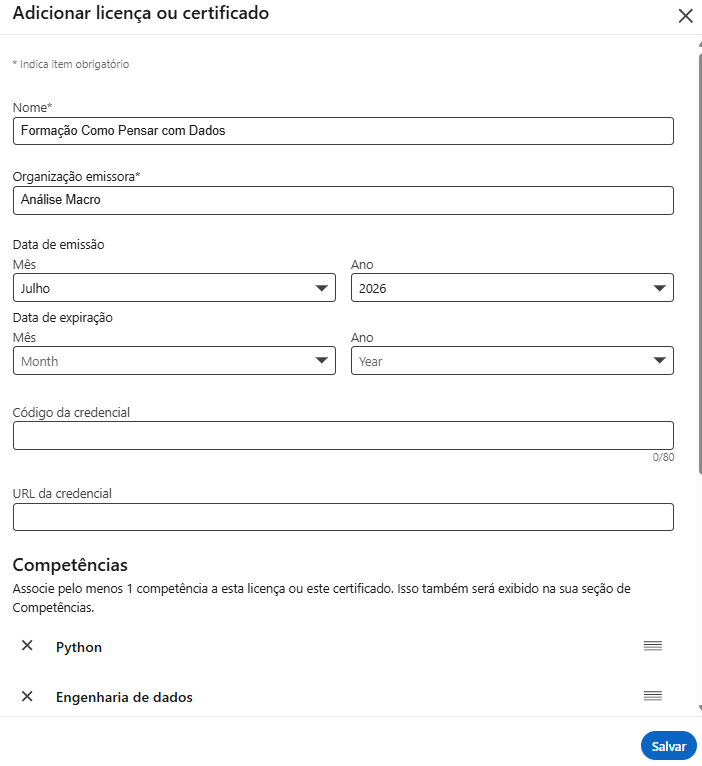
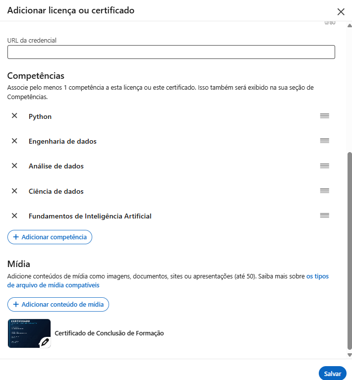
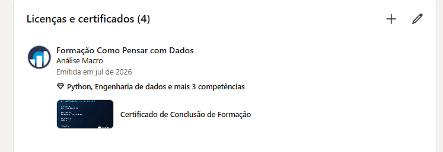

Conclusão da Formação Python e Automação para o Mercado Financeiro
Você chegou até aqui — e agora?
1 Parabéns por chegar até aqui!
Você percorreu os cinco blocos da Formação Python e Automação para o Mercado Financeiro e construiu seu próprio ecossistema de análise financeira automatizada: da coleta de dados em tempo real à modelagem, ao backtesting e a relatórios que se atualizam sozinhos.
O caminho, em resumo:
- Bloco 1 — integração à plataforma e plano de estudos
- Bloco 2 — base de Python e análise de dados
- Bloco 3 — coleta e automação de dados financeiros via APIs
- Bloco 4 — modelagem financeira com machine learning e econometria
- Bloco 5 — relatórios e dashboards em tempo real com IA
O que ainda vale a pena aprofundar
A base está pronta. Caminhos naturais para seguir:
- Modelos financeiros mais avançados, aprofundando precificação de derivativos, otimização de portfólio e gestão de risco.
- Engenharia de dados, para levar seus pipelines financeiros a um nível de produção ainda mais robusto.
- Análise macroeconômica, para conectar sua leitura de mercado ao cenário macro que move os preços dos ativos.
- IA generativa e agentes aplicados a finanças, expandindo o que você viu no Bloco 5 para automações mais sofisticadas.
Continue praticando com dados reais de mercado e teste suas automações contra o pregão do dia a dia.
2 Onde você pode atuar com essa formação
Os cargos que listamos nas boas-vindas, agora com o que da trilha sustenta cada um:
- Analista Quantitativo (Quant) Jr. — modelagem com machine learning e econometria (Bloco 4): precificação de opções, previsão de volatilidade, VaR.
- Cientista de Dados (mercado financeiro) — a base de Python e análise de dados (Bloco 2) com a modelagem do Bloco 4 é o instrumental de quem constrói modelos e avalia erros num domínio de alto valor.
- Engenheiro(a) de Machine Learning — os modelos do Bloco 4 somados aos pipelines automatizados do Bloco 5, que é o que mantém um modelo rodando em produção.
- Especialista em IA aplicada a finanças — os relatórios e dashboards com IA do Bloco 5 aplicam LLMs a um domínio específico, combinação que poucos dominam.
- Analista de Mercado com foco em automação — coleta via APIs e web scraping (Bloco 3) substitui planilhas por processos escaláveis.
- Assessor(a) de Investimentos — Python aplicado a dados financeiros (Blocos 2 e 3) sustenta recomendações com análise própria, sem depender de relatórios de terceiros.
- Analista de Gestora, Corretora ou Banco — coleta, modelagem e automação (Blocos 3 a 5) espelham o fluxo de mesas de operação e research.
- Desenvolvedor(a) de soluções financeiras — dashboards com Python, Quarto e GitHub Actions (Bloco 5) para construir ferramentas internas.
- Consultor(a) financeiro(a) quantitativo(a) — o ciclo completo te credencia a montar soluções sob medida para cada cliente.
3 Seus certificados
Esta formação emite dois tipos de certificado, obtidos em lugares diferentes.
Certificado de cada curso
Conforme você finaliza cada curso da trilha, o certificado individual correspondente fica disponível na própria página daquele curso, dentro da plataforma. São eles que comprovam cada etapa percorrida.
Certificado da formação
Este é o certificado consolidado da trilha inteira, e ele não fica na página de nenhum curso. É emitido em um endereço próprio, a página de grupo da formação:
🔗 Acessar a página da formação e gerar meu certificado
Guarde este endereço. É nele — e somente nele — que o certificado da formação completa é emitido. Procurar pelo certificado da formação dentro da página de um curso não vai funcionar, porque são coisas distintas.
O link abre em uma nova aba, para você não perder esta página.
O certificado da formação só é gerado quando todos os cursos da trilha estiverem concluídos — e um curso só conta como concluído quando todas as suas aulas e seções estão marcadas como concluídas na plataforma.
Não basta assistir ao conteúdo: a marcação é o que registra sua progressão no sistema. Se faltar uma única aula ou seção sem marcar, em qualquer curso da trilha, a formação continua constando como incompleta e o certificado consolidado não fica disponível.
Antes de clicar no link acima, marque esta aula como concluída no botão da plataforma, logo abaixo desta página, e confira se não ficou nenhuma pendência nos cursos anteriores.
4 Seus próximos passos
Marque como concluídos esta aula e todos os cursos da trilha — todas as aulas e seções de cada um. Sem isso, o certificado da formação não é emitido, mesmo que você já tenha assistido a tudo.
Acesse a página de grupo da formação (link acima) e gere o seu certificado consolidado.
Compartilhe sua conquista. Veja como logo abaixo — é uma forma simples de mostrar ao mercado (e à sua rede) o que você construiu.
Agende uma conversa com o Vitor Wilher. Se você quer discutir carreira, tirar dúvidas sobre os próximos passos ou entender como aplicar o que aprendeu na sua situação específica, marque um horário:
Continue evoluindo. Explore as demais formações e cursos de especialização da Análise Macro para aprofundar exatamente a área que mais despertou seu interesse ao longo da trilha.
5 Compartilhe seu certificado no LinkedIn
Um certificado guardado não abre portas. Um certificado visível no seu perfil mostra a quem procura talento que você não só estudou — você concluiu uma trilha inteira. Depois de emitido, o passo mais importante é salvá-lo no seu LinkedIn.
Como adicionar o certificado no LinkedIn — passo a passo
1. Abra a seção de licenças e certificados. No seu perfil do LinkedIn, vá até “Licenças e certificados” e clique no + para adicionar um novo. Preencha:
- Nome: o nome da formação.
- Organização emissora: Análise Macro.
- Data de emissão: o mês e o ano em que você concluiu.
- Código e URL da credencial: pode deixar em branco — nosso sistema não gera um link de verificação externo.

2. Associe competências e anexe o certificado. Ainda no formulário, role para baixo:
- Em Competências, adicione as habilidades que você desenvolveu na trilha. Elas também aparecem na sua seção de Competências, o que ajuda recrutadores a te encontrarem.
- Em Mídia, clique em Adicionar conteúdo de mídia e anexe o arquivo do certificado (o PDF que você baixou). É isso que deixa o certificado visível e clicável no perfil.

3. Salve e confira o resultado. Clique em Salvar. O certificado passa a aparecer no seu perfil, com a imagem, as competências e a data.

Publique também no feed
Além de adicionar ao perfil, faça um post contando o que você aprendeu, os blocos que percorreu e o que pretende fazer com esse conhecimento. Marque a Análise Macro para ampliar o alcance, e use uma imagem — posts com imagem engajam mais.
Publicar no feed dá visibilidade imediata na sua rede, mas o post some no fluxo depois de alguns dias. Adicionar na aba de certificações deixa a conquista permanente no seu perfil, visível para quem visitar seu LinkedIn meses depois.
6 Obrigado por confiar na Análise Macro
Foi um prazer acompanhar sua jornada até aqui. Você investiu tempo real em construir o seu próprio ecossistema de análise financeira automatizada, e esse é o tipo de investimento que se paga ao longo de toda uma carreira. Estamos por perto para o que vier a seguir — conte com a gente.